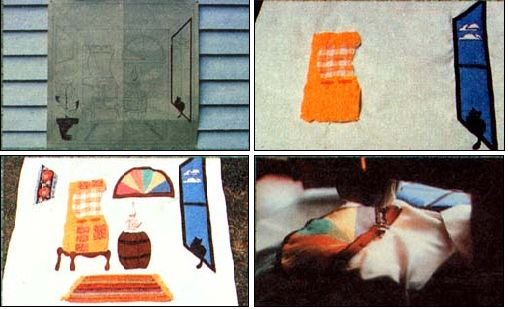

Figures are cut from paper pattern and used to outline shapes onto Pieces of fabric that will be appliqued ... the window is completed and stove is being positioned ... barrel, rug, and other elements are pinned to front 32-inch square so that the balance of the layout can be checked ... rainbow window is sewed together and then zigzagged into place.